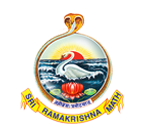
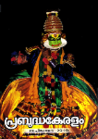

About
Prabuddha Kerelam and Ramakrishna Math, Puranattukara, Thrissur.
Beginning of Sri Ramakrishna Math at Thrissur
In 1927, Krishna Menon founded the Sri Ramakrishna Gurukulam at Puranattukara with two little girls belonged to the Vettuva community among the Harijans. Harijan boys followed suit and in course of time boys from other communities including Naboodiri also joined the Gurukulam. Thus a Gurukula Vidyamandiram for boys and Matru Mandiram for girls were formally inaugurated on 1st June, 1927 at Puranattukara. The plot where the Gurukulam situated was duly purchased in 1927. It was then in 1929 that the Ramakrishna Order took over these welfare activities along with the land. The new branch was addressed as Sri Ramakrishna Math, Puranattukara, Vilangan, Thrissur. Soon after,Krishna Menon was initiated into the vows of Brahmacharya and named Brahmachari Akhandachaitanya. Later in 1932, he was initiated into Sannyasa and named Tyagisananda.
Our emblem
The emblem of the Ramakrishna Order designed by Swamiji is a unique and unparalleled work of art created by one of the richest minds in contemporary history in an exalted mood of spiritual inspiration. It is a profound symbol of harmony and synthesis for reverential meditation in this present age of conflict and disharmony. This symbol is the epitome of Swamiji’s message of harmony and synthesis, leading to life’s fulfilment. This is indeed the most eloquent expression of what he really preached, what he wanted every man and woman to be, to realize, either in the East or in the West. The goal is to realize, even in this very life, one’s real Self, the self-effulgent Atman, the Swan in the emblem and through this realization to be free of all limitations, all bondages, all littleness. This spiritual freedom is one thing to be aspired for and achieved in this very life. It releases one from one’s prison-house of limited individuality and confers upon him or her, the blessing of universal existence. He then becomes one with Existence-Knowledge-Bliss Absolute. ‘Be free. This is the whole of religion’ said Swamiji. The meaning behind this emblem, in the language of Vivekananda himself: “The wavy waters in the picture are symbolic of Karma, the lotus of Bhakti, and the rising-sun of Jnana. The encircling serpent is indicative of Yoga and awakened Kundalini Shakti, while the swan in the picture stands for Paramatman. Therefore, the ideal of the picture is that by the union of Karma, Jnana, Bhakti and Yoga, the vision of the Paramatman is obtained”
Genisis of Prabuddha Kerelam
Publications in Malayalam that contained the life and message of Sri Ramakrishna, Sri Sarada Devi and Swami Vivekananda have been brought out by the Math since 1910. However, the demand for an official mouthpiece of the Order in Malayalam soon found expression in the form of ‘Prabuddhakeralam’. Initially published in Kollam with the inspiration and support of Srimad Swami Nirmalananda, the monthly magazine was later shifted to, and published at Thiruvananthapuram, Alappuzha, Ottappalam and Kalady. In 1964 the magazine office was shifted to Thrissur, with the inauguration of a publication department at the Math in 1963 as well as a letter press. Henceforth, the magazine has been published uninterruptedly. The Math brought out the Malayalam version of the ‘Complete Works of Swami Vivekananda’ in 1963, during the 100th birth anniversary celebrations of Swami Vivekananda. The Malayalam version named ‘Vivekananda Sahitya Sarvaswam’ is a set of 7 volumes and now widely popular.